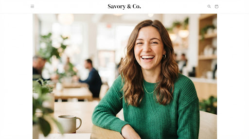

Cook Better, Eat Happier
1000+ tested recipes with step-by-step photos & videos, desgined to inspire
the modern home cook
Featured Recipes
Handpicked favourites for this season
View all recipes

Easy
View Recipe
15 min 4 Servings
Creamy Garlic Pasta
4.8

Vegan
25 min 2 Servings
Roasted Veggiie Quinoa
4.9

20 min 2 Servings
Lemon Asparagus Salmon
4.7

Family
45 min 6 Servings
Artisanal Health Pizza
5.0
Explore by Categories
Breakfast
Lunch
Dinner
Desserts
Vegan
30-Min

Certified Quality
Trusted by 50k+ home cooks
Community Love
"The Creamy Garlic Pasta is now a weekly staple in our house. The step-by-step videos make it so easy even for a beginner like me!"
Sarah Mitchell
Home Cook
"Finally a recipe site that focus on techniques and quality ingredients. The artisanal pizza crust intructions are a game changer."
David Chen
Food Enthusiast
"The meal palns have saved me so much time. I love that the ingredients are accessible yet the results are high-end."

Elena Rodriquez
Working Parents
Join the Savoury Table
Get a weekly dosr o culinary inspiration, new recipes, and exclusive kitchen tips delivered to your inbox.
We respect your privacy. Unsubscribe anytime.
Get in Touch
Have a question about a recipe? Or want to collaborate? Drop us a mesage.